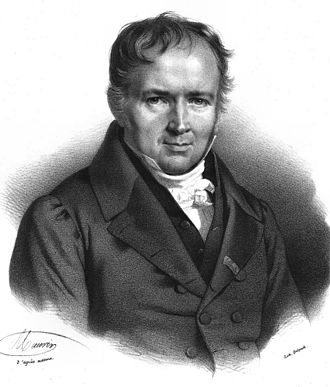

[1] 0.027Lecture 6: Discrete distributions
BIOS 600 - Spring 2026
Announcements
Lab 1 due tonight at 11:59pm.
HW5 due tomorrow at 11:59pm.
Participation activity for today due tomorrow at 11:59pm.
Supplemental reading
- Pagano and Gavreau: Section 7.2 and 7.3
- OpenIntro Statistics: 3.4, 4.3, and 4.5
Overview
What is a random variable?
Discrete distributions, Binomial and Poisson, and applications
What is a random variable?
A random variable is a quantity whose value depends on the outcome of a random event.
Traditionally, we use capital letters \(X\), \(Y\), \(Z\) to denote random variables.
The values that random variables take are lowercase \(x\), \(y\), \(z\)
So, the probability that random variable \(X\) has the value \(x\) is denoted by \(P(X = x)\)
Random variables encountered in this class will be either discrete or continuous.
Discrete random variables
Discrete random variables are those that can take on a countable number of potential values (could be countably infinite!), each associated with a probability of occurring.
- Example: Toss a coin (H, T), Roll a die (1, 2, 3, 4, 5, 6)
This list of possible values and probabilities is the probability distribution for the discrete random variable in question.
Probability distributions let us investigate how likely events may be.
For discrete random variables, you may also see the term probability mass function, which is the same thing.
Example: Probability distribution of births in the US

Let \(X\) be the random variable for birth status in the US. Its probability distribution may be given by
| Event | Probability |
|---|---|
| X = pre | 0.10 |
| X = early | 0.27 |
| X = full | 0.57 |
| X = late/post | 0.06 |
Probability distribution of births in the US
| Event | Probability |
|---|---|
| X = pre | 0.10 |
| X = early | 0.27 |
| X = full | 0.57 |
| X = late/post | 0.06 |
There are three rules for discrete probability distributions:
- Outcomes must be disjoint
- The probability of each outcome must be \(\geq\) 0 and \(\leq\) 1
- The sum of the outcome probabilities must add up to 1.
Verify the three rules
Let’s verify the three rules above are satisfied with the births example.
Bernoulli random variables
Some “types” of random variables come up very often. Consider a dichotomous (two-level) random variable \(X\):
- Dead or alive
- Current smoker or not
This is known as a Bernoulli random variable, and has a probability of “success” denoted by \(p\).
Bernoulli random variables
With the notation that event \(X=1\) is a “success” and \(X=0\) is a “failure”, \(P(X=1)=p\) and \(P(X=0) = 1-p\)
- Fair coin flip: Let the event X=1 denote heads.
| Event | P(Event) |
|---|---|
| \(X=1\) | 0.5 |
| \(X=0\) | 0.5 |
- 2018 US births: Let the event \(X=1\) denote preterm birth.
| Event | P(Event) |
|---|---|
| \(X=1\) | 0.1 |
| \(X=0\) | 0.9 |
A “success” is not necessarily positive - if we are interested in the probability of dying, a “success” would be death.
Bernoulli variable examples
- Y is the event a household experiences food insecurity anytime in a year
- Y = 1, a “success,” if household experiences food insecurity
- S is event a policy violation is detected at an inspection
- S = 1, a “success,” if a policy violation is detected
- Q is the event a microbiome taxa is present in a host
- Q = 1, a “success,” if the taxa is present
- For all of these there are only possible outcomes
- \(P(A) = p\)
- \(P(A^C)=1-p\)
Extending the Bernoulli distribution
Suppose we randomly select two independent US births in 2018, and \(Z\) is a new random variable that represents the number of preterm births among them.
\(Z\) can be 0, 1, or 2:
| 1st Birth \(X\) | 2nd Birth \(X\) | # Preterm Births \(Z\) | Probability of Outcome |
|---|---|---|---|
| 0 | 0 | 0 | |
| 1 | 0 | 1 | |
| 0 | 1 | 1 | |
| 1 | 1 | 2 |
Extending the Bernoulli distribution
Let \(X_1\) be 1 if the first birth is preterm, and \(X_2\) be 1 if the second birth is preterm, and 0 otherwise.
Recall
If A and B are independent then \(P(A \cap B) = P(A) \cdot P(B)\).
Because these two births are independent, then
\[ \begin{aligned} P(\textrm{both preterm}) &= P(\textrm{first preterm and 2nd preterm})\\ &= P(\textrm{first preterm} \cap \textrm{2nd preterm})\\ &= P(\textrm{first preterm}) \cdot P(\textrm{2nd preterm})\\ &= p * p = 0.1 \times 0.1 = 0.01 \end{aligned} \]
Extending the Bernoulli distribution
Back to the table, row 1 is given by
\(P(X_1 = 0 \cap X_2 = 0) = P(X_1 = 0) P(X_2 = 0) = (1-p)(1-p)\)
| 1st Birth \(X\) | 2nd Birth \(X\) | # Preterm Births \(Z\) | Probability of Outcome |
|---|---|---|---|
| 0 | 0 | 0 | (0.9)(0.9)=0.81 |
| 1 | 0 | 1 | |
| 0 | 1 | 1 | |
| 1 | 1 | 2 |
Extending the Bernoulli distribution
Thus, the probability distribution (a.k.a. probability mass function) of the number of preterm births out of two independent births is given by
| \(z=0\) | \(z=1\) | \(z=2\) | |
|---|---|---|---|
| \(P(Z=z)\) | 0.81 | 0.18 | 0.01 |
Extending the Bernoulli distribution
Now let \(Z\) be the random variable corresponding to the number of preterm births among 3 independently sampled births
| First Birth \(X_1\) | Second Birth \(X_2\) | Third Birth \(X_3\) | Number of Preterm Births \(Z\) | Probability |
|---|---|---|---|---|
| 0 | 0 | 0 | 0 | |
| 1 | 0 | 0 | 1 | |
| 0 | 1 | 0 | 1 | |
| 0 | 0 | 1 | 1 | |
| 1 | 1 | 0 | 2 | |
| 1 | 0 | 1 | 2 | |
| 0 | 1 | 1 | 2 | |
| 1 | 1 | 1 | 3 |
Extending the Bernoulli distribution
Row 1 is given by
\(P(X_1 = 0 \cap X_2 = 0 \cap X_3 = 0) = (1-p)(1-p)(1-p)\)
| First Birth \(X_1\) | Second Birth \(X_2\) | Third Birth \(X_3\) | Number of Preterm Births \(Z\) | Probability |
|---|---|---|---|---|
| 0 | 0 | 0 | 0 | 0.729 |
| 1 | 0 | 0 | 1 | |
| 0 | 1 | 0 | 1 | |
| 0 | 0 | 1 | 1 | |
| 1 | 1 | 0 | 2 | |
| 1 | 0 | 1 | 2 | |
| 0 | 1 | 1 | 2 | |
| 1 | 1 | 1 | 3 |
Extending the Bernoulli distribution
Row 2 is given by
\(P(X_1 = 1 \cap X_2 = 0 \cap X_3 = 0) = p(1-p)(1-p)\)
| First Birth \(X_1\) | Second Birth \(X_2\) | Third Birth \(X_3\) | Number of Preterm Births \(Z\) | Probability |
|---|---|---|---|---|
| 0 | 0 | 0 | 0 | 0.729 |
| 1 | 0 | 0 | 1 | 0.081 |
| 0 | 1 | 0 | 1 | |
| 0 | 0 | 1 | 1 | |
| 1 | 1 | 0 | 2 | |
| 1 | 0 | 1 | 2 | |
| 0 | 1 | 1 | 2 | |
| 1 | 1 | 1 | 3 |
Extending the Bernoulli distribution
…et cetera
| First Birth \(X_1\) | Second Birth \(X_2\) | Third Birth \(X_3\) | Number of Preterm Births \(Z\) | Probability |
|---|---|---|---|---|
| 0 | 0 | 0 | 0 | 0.729 |
| 1 | 0 | 0 | 1 | 0.081 |
| 0 | 1 | 0 | 1 | 0.081 |
| 0 | 0 | 1 | 1 | 0.081 |
| 1 | 1 | 0 | 2 | 0.009 |
| 1 | 0 | 1 | 2 | 0.009 |
| 0 | 1 | 1 | 2 | 0.009 |
| 1 | 1 | 1 | 3 | 0.001 |
Extending the Bernoulli distribution
If we randomly sample 3 births, what is the chance 2 are preterm?
0.009 + 0.009 + 0.009 = 0.027 (why?)
| First Birth \(X_1\) | Second Birth \(X_2\) | Third Birth \(X_3\) | Number of Preterm Births \(Z\) | Probability |
|---|---|---|---|---|
| 0 | 0 | 0 | 0 | 0.729 |
| 1 | 0 | 0 | 1 | 0.081 |
| 0 | 1 | 0 | 1 | 0.081 |
| 0 | 0 | 1 | 1 | 0.081 |
| 1 | 1 | 0 | 2 | 0.009 |
| 1 | 0 | 1 | 2 | 0.009 |
| 0 | 1 | 1 | 2 | 0.009 |
| 1 | 1 | 1 | 3 | 0.001 |
Extending the Bernoulli distribution
Thus, the probability distribution of the number of preterm births out of three independent births is given by
| \(z=0\) | \(z=1\) | \(z=2\) | \(z=3\) | |
|---|---|---|---|---|
| \(P(Z=z)\) | 0.729 | 0.243 | 0.027 | 0.001 |
Verify
Are these disjoint events, with probabilities in [0,1], that all sum to 1?)
Extending the Bernoulli distribution
If we randomly sample 4 births, what is the probability distribution for the number of preterm births?
To build a similar table would start to become egregious.
Luckily, there is a formula for this probability distribution!
The binomial distribution
The binomial distribution gives the probability of \(k\) “successes” from a sequence of \(n\) independent Bernoulli trials. There are three assumptions:
There is a fixed number of trials \(n\), each of which is a Bernoulli random variable.
The outcomes of the \(n\) trials are independent.
The probability of success, \(p\), is the same of each of these trials.
The binomial distribution
If \(X\) has a binomial distribution, then
\[P(X=k) = {n \choose k}p^k (1-p)^{n-k}\]
What do these components mean?
- \(n\) = # of bernoulli trials
- \(k\) = # of successes
- \(p\) = probability of success
- \(n-k\) = # of failures
Note
This expression will always be provided to you if needed.
N choose K
- Let’s go to our example of preterm births, \(P(Z=2)\)
- If I have 3 trials, then there would be a few different ways I could say for example choose 2 of them to be successes
\[{n \choose k} = {3 \choose 2} = \frac{3!}{2!(3-2)!} = 3\]
- For 2 births that could happen several different ways
- \(X_1 = 1, X_2=1, X_3=0\)
- \(X_1 = 0, X_2=1, X_3=1\)
- \(X_1 = 1, X_2=1, X_3=0\)
- Note: \({n \choose 1} = n, {n \choose 0} = 1\)
The binomial distribution
If we randomly sample 3 births, what is the chance 2 are preterm?
There is a fixed number of trials, each of which is a Bernoulli random variable
The outcomes of the trials are independent
The probability of success is the same for each of these trials
Thus, \(Z \sim Binom(3, 0.1)\).
\[ \begin{aligned} P(Z=2) &= {3 \choose 2} 0.1^2 (1-0.1)^{3-2} \\ &= \frac{3!}{2!(3-2)!} \times 0.1^2 \times 0.9 ^1 = 0.027 \end{aligned} \]
Bernoulli variable examples
Let’s go back to our other examples:
Y - household experiences food insecurity
- What if we look at 100 households across the US?
S - policy violation is detected
- What if we inspect 20 different companies?
Q - microbiome taxa is present in a host
- What if we sample 3000 different taxa?
In R
We can calculate these probabilities in R with the dbinom() function:
Participation
Application Exercise in R
For today’s participation, you’ll practice some of the functions we learn today using R.
In Canvas, download the Quarto template for the Application Exercise for today. Save the file with a sensible name (
ae-01.qmd) in your project folder.Begin by working on Exercises 1 and 2.
The Poisson distribution
Discrete distribution taking on possible values 0, 1, 2, \(\ldots\), \(\infty\)
Often used to model counts or rare events
Much like the binomial distribution, requires a few assumptions

The Poisson distribution
The Poisson distribution gives the probability that \(k\) events occur in a given “interval”. There are four assumptions:
Within any interval, \(k\) may take on values 0, 1, 2, 3, \(\ldots\), \(\infty\)
Each event occurs independently, both within the same interval, and between intervals
The average rate at which events occur in an interval, \(\lambda\), is constant
Two events cannot occur simultaneously
What is an “interval”?
The Poisson distribution
If \(X\) has a Poisson distribution, then
\[P(X=k) = \frac{\lambda^k e^{-\lambda}}{k!}\]
What do these components mean?
Note
This expression will always be provided to you if needed.
The Poisson distribution
Suppose on average, there are 1.5 deaths due to Alzheimer’s Disease in a town each year. For a one-year period in this town, what is the chance that two or more people die from Alzheimer’s?
Within any interval, the number of AD deaths can range from 0 to \(\infty\) (technically not true, but close enough)
One individual dying of Alzheimer’s does not affect the chance of another person dying of Alzheimer’s
The AD death rate is constant in this town
Two AD deaths cannot occur at the same time (we can always subdivide time intervals such that only one person experiences this event in a given sub-interval)
The Poisson distribution
Thus \(Z \sim Pois(1.5)\), and \(P(Z=0)\), \(P(Z=1)\), and \(P(Z\geq 2)\) are disjoint events. So, \(P(Z \geq 2) = 1- [P(Z = 0) + P(Z = 1)]\), where
\[ \begin{aligned} P(Z=0) &= \frac{1.5^0 \times e^{-1.5}}{0!}\approx 0.223 \\ P(Z=1) &= \frac{1.5^1 \times e^{-1.5}}{1!}\approx 0.335 \end{aligned} \]
And so \(P(Z \geq 2) \approx 1-0.223-0.335 = 0.442\).
In R
We can calculate these values in R using the dpois() function:
Note: Each parentheses needs a buddy! Common source of Quarto files not rendering…
In R
If we wanted to abbreviate our typing (and reduce possibility of typos), we can save our first two probabilities as objects p0 and p1 to use them later.
What about other interval lengths?
Suppose we have a count random variable that follows a Poisson distribution:
Since each event is independent of others and the rate \(\lambda\) is constant, the probability that an event occurs within an interval is proportional to the length of that interval.
E.g., we would expect twice the number of events to occur in an interval of twice the length; we would expect 1/9 times the number of events to occur in an interval 9 times as small; and so on.
What about other interval lengths?
Suppose on average, there are 1.5 deaths due to Alzheimer’s disease in a town each year.
Example:
What is the average one-month rate of deaths due to Alzheimer’s disease in this town?
For any given one-month period in this town, what is the probability that exactly one person dies from Alzheimer’s? (Just the expression is fine)
For \(X \sim Pois(\lambda)\),
\[P(X=k) = \frac{\lambda^k e^{-\lambda}}{k!}\]
Participation
Practice in R
In today’s participation, continue with Exercise 3.
When you’ve completed the exercises, render, save to PDF, and submit on Canvas> Assignments. Due Tuesday at 11:59pm.
Expectation and variance
Now that we’ve defined random variables and explored a few distributions, we might be interested in some other aspects of their distributions.
Suppose we are interested in the probability distribution corresponding to the number of preterm births in a random sample of five independent US births.
How many preterm births should we expect?
How “spread out” would this distribution be?
Expected value
The expected value of a discrete random variable \(X\) is a weighted average of the possible outcomes:
\[E(X) = \sum_{\textrm{all } x} x \cdot P(X = x)\]
This is a property of the distribution of \(X\), not of the random variable itself.
Why are these important?
The expectation is the average value (weighted by the probability of each value occurring)
The variance describes the expected spread of values around the population expectation (thus, variance is in fact an expectation itself!)A
Properties of Bernoulli and binomial random variables
- For \(Z \sim Bern(p)\), \(E(Z) = p\) and \(Var(Z) = p(1-p)\)
Example: Let Z be a coin toss. \(Z \sim Bern(.5)\). \(E(Z) = .5\) and \(Var(Z) = 0.5 \cdot (0.5) = 0.25\).
For \(Z \sim Binom(n, p)\), \(E(Z) = np\) and \(Var(Z) = np(1-p)\)
For \(Z \sim Pois(\lambda)\), \(E(Z) = Var(Z) = \lambda\)
Properties of Bernoulli and binomial random variables
For \(Z \sim Bern(p)\), \(E(Z) = p\) and I expect across many trials, the average rate of success would be \(p\)
For \(Z \sim Binom(n, p)\), \(E(Z) = np\) and I expect across n trials, I would have \(np\) successes
For \(Z \sim Pois(\lambda)\), \(E(Z) = \lambda\) and I expect for this given interval there would be a total of \(\lambda\) events
Recap
Discrete random variables
Binomial, Poisson random variables and applications
Expected values and variances
Next class
- Continuous distributions